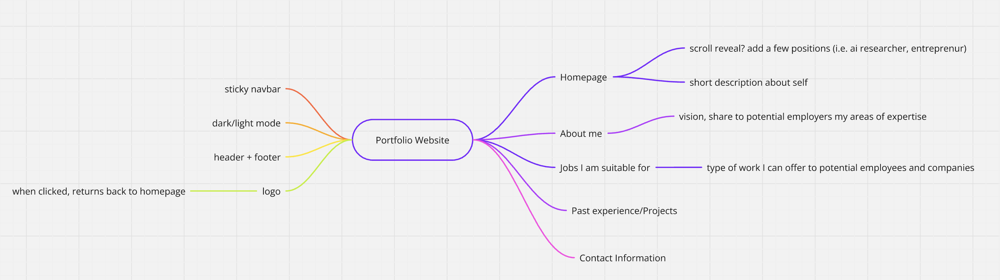
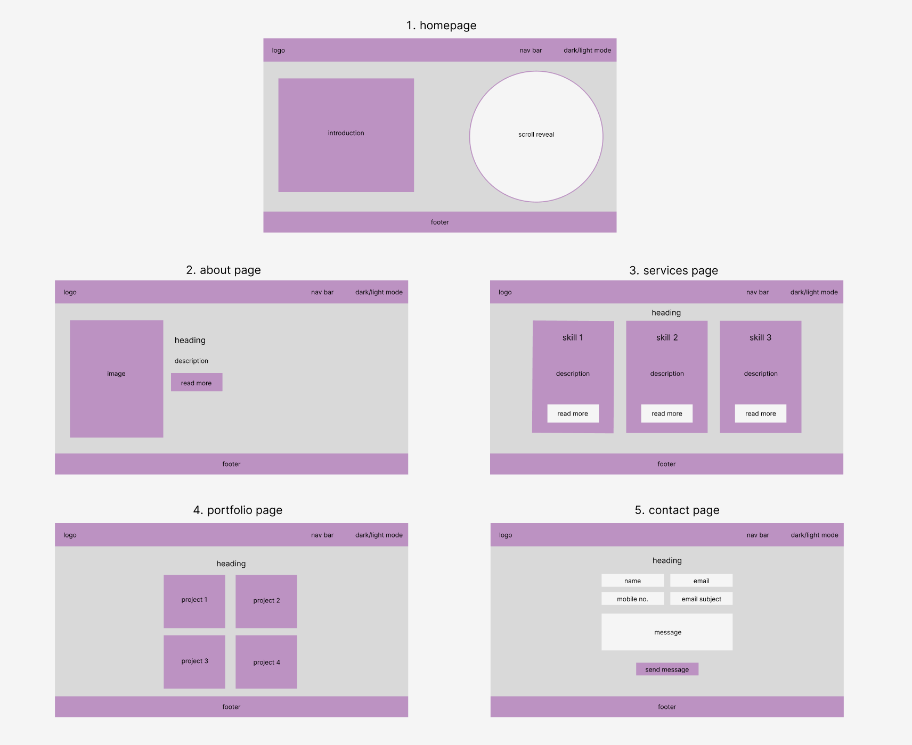

Web Development Final Report - Francine Quinto
Introduction: What is the essential story being told by your portfolio site? Describe the version of
you that it is about. What is the audience you are addressing? What type of structure did you
choose to implement?
The essential story of my portfolio site is to showcase to users about who I am and the skills I hone. I wanted this site to be more focused on showcasing my technical skills
as well as the services I can help them with. I am addressing anyone who is interested in my expertise and are looking to hire me or any users that are simply looking for inspiration
for their own portfolio websites. Since I had a 5-page limit, I emphasised on parts of a short but detailed portfolio that an employer would care the most about: a good introduction,
skills you can offer them, past projects that showcase your talents and a way to contact you.
Inspiration: State 3 professional portfolio sites (not advices articles or portfolio templates) that
have inspired you when creating your website. What did you learn from them?
www.safetpojskic.com
https://benscott.dev/
https://tamalsen.dev/
These websites inspired me to add key features to my website such as Safet's light/dark mode, Ben's sticky navbar and Tamal's page transitions.
Accessibility: State 3 ways in which your site is accessible.
- Navbar - allows for clear navigation between pages
- Media responsiveness - website adapts to various screen sizes
- Content Hierarchy - fascilitates fluid readability
Usability: State 3 ways in which you considered the usability of your site.
- Public URLs - page can be accessed via the link provided in the submission
- Consistent colour scheme & design - makes it familiar/simpler to use
- Interactive Feedback - using hover effects & buttons allow users to understand how to interact with the website better
Learning: State 3 things you had to learn or find out to create your site. How did you achieve that?
- Text Transitions - I learnt how to use hover effects during the midterm project but text transitions were still very new to me. I used online sources such as
W3 schools & YouTube tutorials to achieve this.
- Sticky Navbar - I wanted the navbar to stay at the top of the site even when the user scrolls down to the bottom of the page. I didn't know what this was called initially
so I researched 'Navbar effects' online until I found a tutorial showcasing how to achieve this.
Evaluation I: What aspects of your work do you think were particularly successful? Why?
I really liked how my hover effects & transitions turned out. I think they add a lot of visual appeal to the website & make the site more interactive
for users as well. I also really like the customisation feature I added by including a dark/light mode.
Evaluation II: What aspects of your work could be improved? How might you do things differently another time?
- Dark/light mode could definitely have been improved; when switching pages, if dark mode is on, the page switches back to light mode
when the user visits another page of the site.
- Send Message button; I wanted to add an effect where when the 'Send Message' button is clicked, there would be a pop up message thanking the
user for the message and that I would contact them soon.
Resources: What resources did you use in your work? List any sources of information, libraries,
plugins, code or tools (you should also indicate inclusions from other sources within your code
using comments)
W3Schools, 'CSS Transitions'[Article]. https://www.w3schools.com/css/css3_transitions.asp
Fabio Musanni, 'Sticky Navbar on Scroll With CSS | Change Navbar Color on Scroll With Javascript', 2022 [Video]. https://www.youtube.com/watch?v=gbmV2Lh9dBM
ScrollReveal, 'Reveal'[Article]. https://scrollrevealjs.org/api/reveal.html
Boxicons, 'High Quality Web Icons'[Text Import]. https://boxicons.com/?query=
Google Fonts, 'Google Fonts' [Font Import]. https://fonts.google.com/selection/embed
Pixabay, 'Pixabay' [Images]. https://pixabay.com/photos/search/website/
Appendices: Site map (if useful), wireframes and mock-ups

Fig. 1: Site Map (https://miro.com/app/board/uXjVKh8EAPM=/?share_link_id=784316815995)

Fig. 2: Wireframes (https://www.figma.com/design/62xJkt4lF2p3yN9yVvuyD6/Untitled?node-id=0-1&t=acf6R8sQJ4jdQ9af-1)